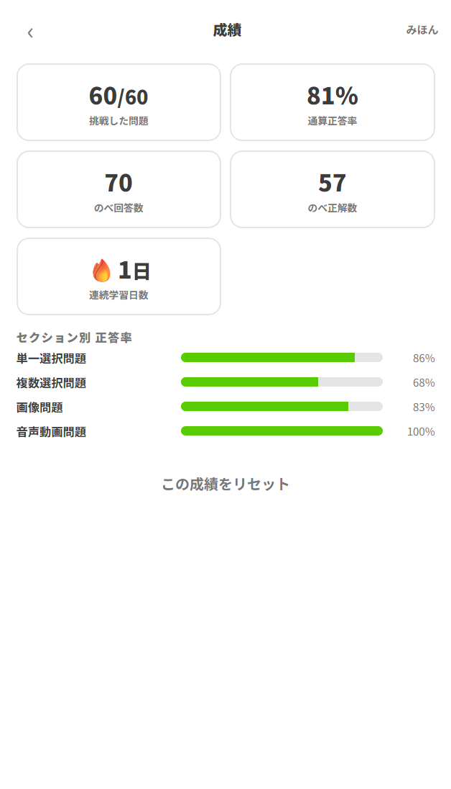

1試験の 1 週間前まで、毎日欠かさず練習する
このアプリでいちばん効くのは、1 日も空けないことです。1 回にたくさん解くより、少しでいいから毎日触るほうが残ります。
点数を目標にすると、調子の悪い日に開きたくなくなります。🔥 の数字を絶やさないことを目標にしてください。忙しい日は通常セッションを 1 回、数問だけ解けば途切れません。「今日はもう無理」という日ほど、これが効きます。
なぜ「1 週間前まで」なのか
直前の 1 週間は、新しいことを詰め込む時期ではなく取りこぼしを回収する時期だからです。この時期になったら練習の中身を切り替えます。
| 時期 | やること | 選ぶモード |
|---|---|---|
| 〜 2 週間前 | 問題プールを一周する。知らない問題をなくす | 間違え優先 ＋ 通常 |
| 2 週間前 〜 1 週間前 | 実力を測りながら弱点を潰す | 本番比率 ＋ 通常／週末に本番モード |
| 1 週間前 〜 前日 | 苦手だけを回収する。新しいことはしない | 間違え優先 ＋ 通常 |
| 前日 | 軽く 1 セッションだけ。早く寝る | 本番比率 ＋ 通常 |
直前に低い点を見ると、自信を失うだけで得るものがありません。本番モードは1 週間前までに、時間の感覚を掴む目的で数回やれば十分です。
1 回分の型
毎日やることを決めておくと迷いません。おすすめはこれです。
-
1
通常セッションを 1 回まわす
その日の目的に合った出題タイプを選ぶ。数分で終わります。
-
2
間違えたら必ず「復習する」まで進める
全問正解するまで再出題されます。ここを飛ばすと、同じ間違いを翌日も繰り返します。
-
3
結果画面のセクション別内訳を見る
同じ分野が続けて低いなら、そこが本当の弱点です。教材に戻るべき場所が分かります。
-
4
🔥 が 1 日伸びたことを確認して閉じる
これで今日のノルマは達成です。
2本番比率と間違え優先の使い分け方
毎日の練習で迷うのは、この 2 つの選択です。役割がはっきり違います。

使い分けの目安
| こんなとき | 選ぶ | 理由 |
|---|---|---|
| 始めたばかりで、まだ解いていない問題が多い | 🎯 間違え優先 | 未挑戦の問題が最優先で出るので、プールを一周するのが早い |
| いまの実力を知りたい | ⚖️ 本番比率 | 本番の構成で測らないと見込み点が分からない |
| 特定の分野が弱いと分かっている | 🎯 間違え優先 | 誤答の多い問題が上位に来る |
| 点が伸びたか確かめたい | ⚖️ 本番比率 | 前回と同じ条件でないと比較にならない |
| 試験の 1 週間前 | 🎯 間違え優先 | この時期は取りこぼしの回収に専念する |
| 何も考えたくない | 🎲 ランダム | 続けることのほうが大事。迷って開かないのが最悪 |
平日は間違え優先で潰し、週末に本番比率で測る。これを 1 サイクルにすると、「潰す → 測る → また潰す」がきれいに回ります。週末の数字が上がっていれば、平日のやり方が合っているということです。
苦手だけを引き続けるので、正答率は上がりにくいままです。「伸びていない」と錯覚して落ち込みやすいので、定期的に本番比率を挟んで測り直してください。
3一周したら成績をリセットする
成績画面の「挑戦した問題」が、問題プールの総数に届いたときが節目です。

なぜリセットするのか
一周し終えた時点の通算正答率には、まだ何も知らなかった頃の誤答が全部混ざっています。上の例の 81% は「これまでの平均」であって、「いまの実力」ではありません。
しかも、のべ回答数が増えるほど 1 回の正解が全体を動かさなくなります。勉強して実力が上がっても、数字はなかなか動きません。これでは伸びが見えません。
記録を消してからもう一周すると、そこで出る正答率は「いまの自分が、全問を解いたときの点数」になります。過去の誤答に薄められていない、そのままの実力です。一周目が 81%、リセット後の二周目が 92% なら、11 ポイント分が身に付いたということです。
リセットのしかた
-
1
ホーム →「成績を見る」
「挑戦した問題」が全問数に届いているか確認します。
-
2
いまの数字を控えておく
通算正答率とセクション別正答率をメモするか、画面を撮っておきます。比較する相手がないとリセットの意味が半減します。
-
3
画面下の「この成績をリセット」を押す
「『○○』の成績をリセットしますか？」と確認が出ます。OK を押すと実行されます。
消えるのは問題ごとの記録と学習した日の記録の両方です。つまりストリークもゼロに戻ります。アカウント自体は残るので、ログインし直す必要はありません。
🔥 の数字を大事にしている場合は、リセットするかどうかをよく考えてください。数字を守りたいなら、リセットせずにセクション別正答率の推移で伸びを見るという手もあります。
リセット後にすること
記録が消えた直後は、全問が「未挑戦」扱いになります。したがって「間違え優先」は、実質ランダムに近い挙動で全問を順に出していきます。
二周目は本番比率で回すのがおすすめです。実力を測り直すことが目的なので、本番の構成で解いたほうが意味のある数字になります。
「挑戦した問題」が全問数に届いたとき。それ以外では、試験勉強を始め直すとき（前回の受験から間が空いた、別の回を受け直す）も切り替えどきです。逆に、まだ一周していないうちにリセットしても、失うものがあるだけで得るものはありません。
4問題を定期的に見直す
ここまでは解く側の話でした。最後は問題そのものの話です。
資格試験は、シラバス（出題範囲）が改定されます。範囲が増えることも、丸ごと削られることもあります。そうなると、いま入っている練習問題は実態とずれます。
むしろ害になります。出題されない範囲に時間を使うことになり、新しく追加された範囲は練習しないまま本番を迎えることになるからです。セクションの比率が変わっていれば、「本番比率」で出る正答率も当てになりません。
見直しが必要なサイン
- 試験の主催団体がシラバスの改定を告知した
- 出題範囲にセクションが追加された、または削除された
- セクションごとの出題数の配分が変わった
- 解いていて「これはもう出ない」と感じる問題が増えてきた
- 公式教材や参考書が改訂された
問題を足したり消したり、セクションの比率を変えたりする画面は、このアプリには用意されていません。いずれもアプリを用意した人（管理者）の作業になります。気づいたことがあれば伝えてください。
管理者に連絡するときは、次を具体的に伝えると作業が早く済みます。
| 伝えること | 例 |
|---|---|
| 何が変わったか | 「○年○月の改定で、第 4 章が出題範囲から外れました」 |
| どの問題が該当するか | 「『○○問題』のセクションが丸ごと不要です」 |
| 出典 | 主催団体の告知ページの URL、改訂版教材の名前 |
| 追加が必要な範囲 | 「新しく○○が追加されたので、問題を足してほしい」 |
間違いを見つけたときも同じです。正解が間違っている、解説がおかしい、図が表示されない——そういうものを見つけたら、問題文の書き出しを添えて管理者に伝えてください。自分が損をしないためでもあり、同じ問題を解く他の人のためにもなります。
問題の追加・削除があると、ホーム画面の「問題バンク：全 N 問」の数字が変わります。プールの中身が大きく変わったときは、成績をリセットして測り直すのが素直です。古い問題の正誤記録が混ざったままでは、正答率が実態を表さなくなるからです。
5まとめ
-
1
1 日も空けない
点数ではなく 🔥 を目標にする。忙しい日は数問だけでいい。
-
2
潰すなら間違え優先、測るなら本番比率
平日は潰す、週末は測る。間違え優先だけに偏らない。
-
3
間違えたら必ず復習ループまで進める
全問正解して閉じる。ここを飛ばすと積み上がらない。
-
4
一周したら数字を控えてリセット
二周目の正答率が、本当の定着度。
-
5
試験範囲が変わったら管理者に伝える
問題が古いままでは、どれだけ解いても点は伸びない。
-
6
1 週間前からは回収だけ
新しいことはしない。前日は軽く 1 回やって早く寝る。
毎日数分の積み上げは、試験当日にちゃんと効きます。🔥 を絶やさずに。